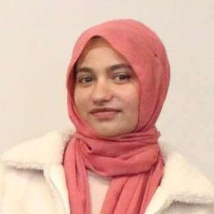
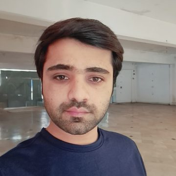

People
The SYNTERA team
38 researchers, academics and students across 10 countries.
Leadership & Founders 3

Dr. Shahrzad Saremi
Founder · Director
 School of Science, Technology and Engineering, University of the Sunshine Coast
School of Science, Technology and Engineering, University of the Sunshine Coast
Professor Dr. Rania Shibl
Co-Director · Cofounder
Faculty of Science and Engineering, Southern Cross University, Lismore
Assoc. Prof. Dr. Dana Dermody
Cofounder · Senior Researcher
Institute of Health and Wellbeing, Federation University
Senior Researchers 3

Hassan Ahmed
Team Lead · Senior Researcher
 Department of Computer Science, National University of Computer and Emerging Sciences (FAST-NUCES), Chiniot-Faisalabad Campus
Department of Computer Science, National University of Computer and Emerging Sciences (FAST-NUCES), Chiniot-Faisalabad Campus
Dr. Mostafa Kamalpour, PhD
Senior Researcher · Sessional Academic
School of Information Systems, Faculty of Science, Queensland University of TechnologyDr. Shiva Ilkhani Zadeh
Senior Researcher
 Business School, Business and Law Department, Bournemouth University
Business School, Business and Law Department, Bournemouth University
Researchers & Academics 32

Abdullah Khan
Senior Researcher
Department of Computer Science, University of Wah, Wah Cantt
Nazmul Hossain
Researcher
 Penston Academy of International Studies, Dhaka
Penston Academy of International Studies, Dhaka
Arooj Fatima
Researcher
Department of Computer Science, University of Wah, Wah Cantt
Samia Mujahid
Researcher
Department of Computer Science, National University of Computer and Emerging Sciences (FAST-NUCES), Chiniot-Faisalabad Campus
Nida Ali
Researcher
Department of Skill Development and Leadership, The University of Lahore, Lahore
Sadegh Rajaei
Researcher
Faculty of Science and Engineering, Southern Cross University, Gold Coast
Tobias Romano
Researcher
 UNICEN
UNICEN
Shiva Jahanaray
Researcher
 Tafakor Pishro Asredade Parsian, Babol
Tafakor Pishro Asredade Parsian, Babol
Aittezaz Ahmad
Researcher

Muhammad Irfan Aslam
Researcher
University of Education, Lahore
Sepehr Amooeinejad
Researcher
School of Information Systems, Queensland University of Technology, Brisbane, QLD
Damilare Ogunjobi
Researcher
 Department of Data Science and Analytics, BI Norwegian Business School, Oslo
Department of Data Science and Analytics, BI Norwegian Business School, Oslo
Bisma Ali
Researcher
School of Electrical Engineering and Computer Science (SEECS), NUST Islamabad
Hilda Jemutai Bitok
PhD Student
School of Science, Technology and Engineering, University of the Sunshine Coast, QLD
Manar Makki Shaalan
Researcher
 University of Babylon, Babylon
University of Babylon, Babylon
Abdul Mateen
Researcher
Department of Computer Science, National University of Computer and Emerging Sciences (FAST-NUCES), Chiniot-Faisalabad Campus
Ghalib Nadeem
Researcher
 Department of Computer Science, Huazhong University of Science and Technology, Wuhan
Department of Computer Science, Huazhong University of Science and Technology, Wuhan
Hina Mehboob
Researcher
National University of Sciences and Technology (NUST), IslamabadJaveria Iqbal
Researcher
Department of Computer Science, National University of Computer and Emerging Sciences, Islamabad
Bilal Aslam
Researcher

Hasanga Uyanhewage
Researcher
Tesco Mobile, Tesco UKAli Hasnain
Researcher
Department of Software Engineering, University of Sahiwal
Malak Emziane
Researcher
 University of Tipaza
University of TipazaRamsha Khan
Researcher
University of Lahore
Svetlana Kolos
Master's Student
Torrens University Australia
Mohamadali Rezaeimanesh
Researcher
School of Information Systems, Queensland University of Technology (QUT), Brisbane, QLD
Amir H. Malekijoo
Researcher
Faculty of Computer Engineering, Department of Computer Engineering, Semnan University
Jie Zhu
Researcher
The University of Queensland
Thiwanka Kaushalya Nagasanga
Researcher
CQUniversity Australia
Meerab Fatima
Researcher
Department of Computer Science, FAST National University of Computer and Emerging Sciences (FAST-NUCES)
Malahat Mardani
Researcher
Babol Noshirvani University of Technology
Mounes Mardani
Researcher
Babol Noshirvani University of Technology
No one matches that filter.